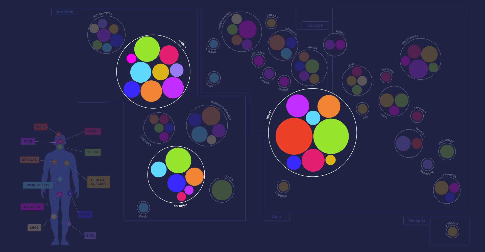
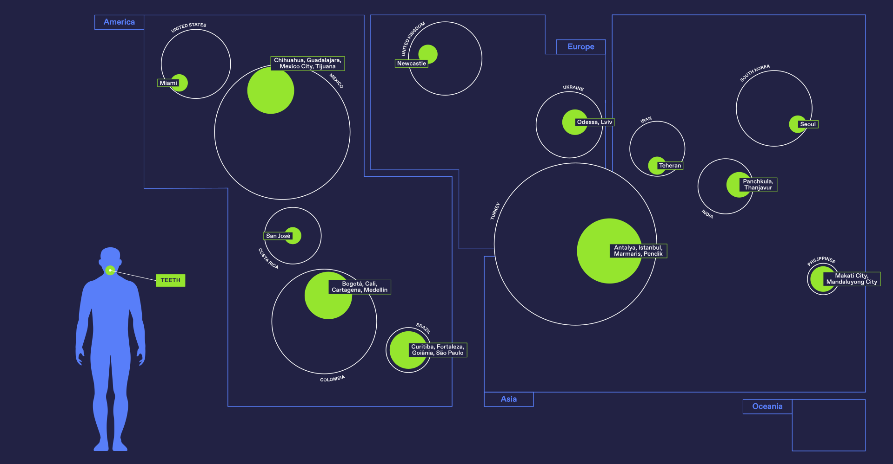
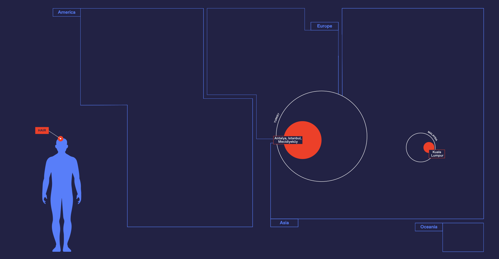
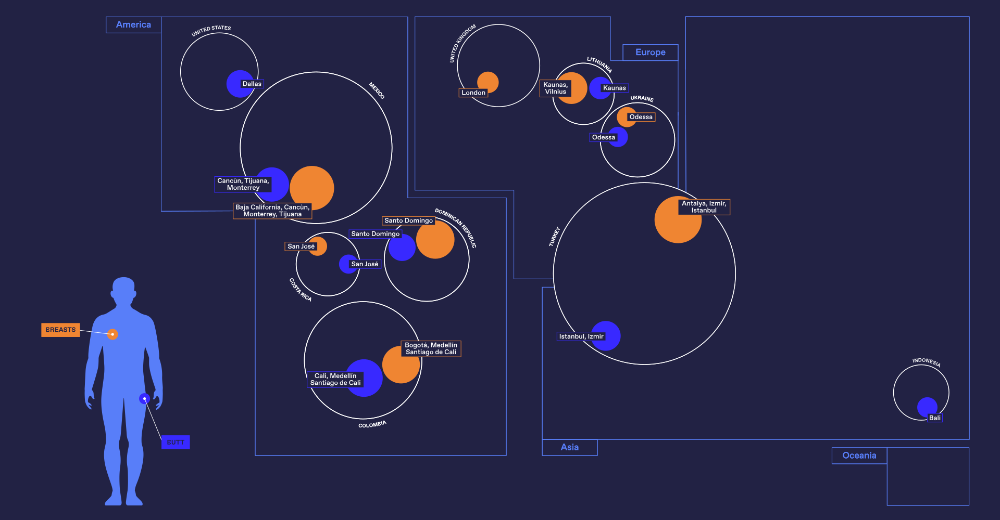
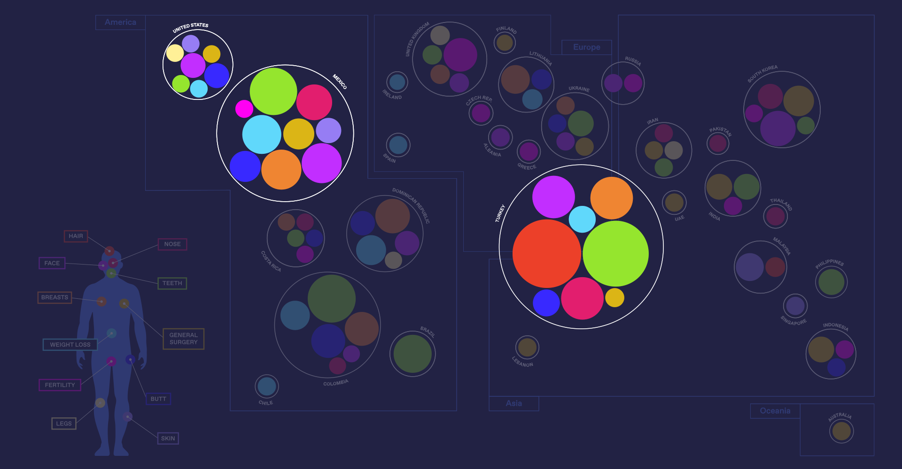

Medical tourism refers to people traveling abroad to obtain medical treatment. You might know this kind of tourism already, but what if you could know where to go in order to get a specific surgical intervention? We analyze a couple hundred posts with the #medicaltourism Instagram hashtag in order to map locations that offer specific treatments around the world. Medical tourism helps people getting medical treatment at a lower price compared to their country of origin.
The biggest circles are located in just a few places, this means that there are countries in which the medical tourism is more spread than others. From this data we can understand which places use the hashtag the most in order to promote their medical services. Istanbul (Turkey), Tijuana (Mexico), Medellín (Colombia) are the cities with the biggest number of active profiles per country.
There is a huge variety of surgical interventions promoted on Instagram: we clustered 11 different surgical categories. The majority of them are related to cosmetic surgery. Amongst them Teeth is the most popular category of surgical intervention, followed by Facial Interventions and Breast Augmentation/Reduction.
According to Instagram some surgical interventions are available only in specific locations. Hair transplants are almost exclusively available in Turkey (made exception of 1 result in Malaysia).
Butt and Breast interventions are often paired together in the visualization, probably because the same clinics offer both surgical interventions. They are mainly distributed in East-Europe and Central/Latin America.
The countries that offer the most diverse portfolio of options are the following: Mexico, Turkey and the United States. However none of them offer all the surgical interventions available.
